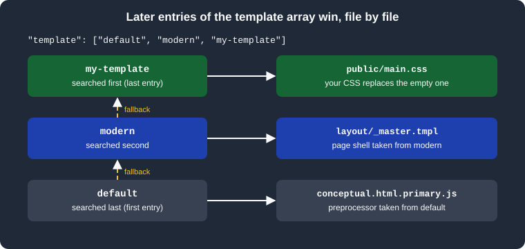

Templates and Customization
|
This content was generated with the assistance of AI and should be verified against the official documentation before being relied on in production. |
This page was written against DocFX 2.81.0 (the latest release, published 2026-09-25) and checked on 2026-10-26. A
template decides how the data DocFX produces (Markdown converted to HTML, API YAML files, tables of contents) becomes a
web site: the page shell, the navigation bar, the sidebar, the footer, the styles and the scripts. Every example was run
with DocFX 2.81.0 in the mcr.microsoft.com/dotnet/sdk:10.0 Docker image against the Pocket Units documentation
project, and the built HTML and CSS files were inspected. The rendered pages were not opened in a browser, so visual
results such as colors and the dark theme are described from the generated files and from the template sources.
What a template is and why it exists
The build stage of DocFX (see Basic Concepts and Pipeline) first produces a data model for every document. A template is a folder that turns each model into an output file. It contains three kinds of files:
-
Mustache files (
*.tmpl, and fragments named*.tmpl.partial) that describe the HTML. The page shell islayout/_master.tmpl;conceptual.html.primary.tmplrenders a Markdown article;ManagedReference.html.primary.tmplorApiPage.html.primary.tmplrender API pages. -
JavaScript files (
*.js) that DocFX runs with the Jint interpreter inside the .NET process. The*.primary.jsfiles are preprocessors that adjust a model before it is rendered, and the*.extension.jsfiles are hooks that such a preprocessor calls. -
Static assets: CSS, scripts, fonts, the favicon and the logo.
Because templates are plain files, customizing a site usually means changing a few of them, not forking DocFX. The
template property of the build section of docfx.json (see docfx.json)
is an array of template folders that are layered: for every file the engine looks in the last entry first and falls
back to the earlier ones.

The figure shows the lookup for three entries. A custom folder only needs the files it wants to change; everything else
comes from the folders before it. This is why the official documentation recommends listing default before modern:
the modern template relies on the default one for the preprocessors and for the files it does not replace.
The built-in templates
DocFX embeds its templates in the tool. docfx template list printed five names in 2.81.0:
default(zh-cn)
default
common
statictoc
moderncommon and statictoc are building blocks for other templates and default(zh-cn) is the default template with
Chinese resources. In practice you choose between default and modern.
| Aspect | default | modern |
|---|---|---|
Look |
The original DocFX look. Its exported styles include the Glyphicons font, which comes from Bootstrap 3. |
A newer look, built on Bootstrap 5.3 with Bootstrap Icons. The official documentation says it supports dark mode, more features and richer customization. |
Where your CSS and JS go |
|
|
Page shell |
|
|
External links |
|
|
Edit link |
|
|
Mermaid and math |
Not supported according to the Markdown page |
Supported, see Markdown |
PDF output |
Not supported |
Supported (DocFX 2.73.0 and later), see PDF Output |
Search |
|
|
Exporting both templates in the test project showed how much each one ships. The two exports together had 372 files, and
most of the modern ones are code-split chunks of the Mermaid, KaTeX, MathJax and lunr language bundles; its own source files are
few. This listing leaves out the bundled files:
modern/
ApiPage.html.primary.js
ApiPage.html.primary.tmpl
layout/_master.tmpl
partials/class.header.tmpl.partial
partials/class.memberpage.tmpl.partial
partials/class.tmpl.partial
partials/collection.tmpl.partial
partials/customMREFContent.tmpl.partial
partials/enum.tmpl.partial
partials/item.tmpl.partial
partials/namespace.tmpl.partial
public/docfx.min.css
public/docfx.min.js
public/main.css
public/main.js
public/search.min.js
public/search-worker.min.js
public/(bundled diagram, math and language scripts)
default/
conceptual.extension.js
conceptual.html.primary.js
conceptual.html.primary.tmpl
ManagedReference.html.primary.js
ManagedReference.html.primary.tmpl
RestApi.html.primary.js
RestApi.html.primary.tmpl
toc.html.primary.js
toc.html.primary.tmpl
layout/_master.tmpl
partials/(about 30 partials)
styles/main.css
styles/main.js
styles/docfx.css
styles/docfx.js
(vendor scripts and fonts)The modern folder has no conceptual-page, REST API or TOC preprocessors of its own, which is why default must come
first in the array. In the exported files public/main.css, styles/main.css and styles/main.js are empty, and
public/main.js contains only an empty default export. They exist as placeholders for you to override.
Template metadata
The easiest customization needs no template folder at all: the templates read predefined metadata keys that start with
an underscore. They are ordinary metadata, so they are set in globalMetadata, fileMetadata, a metadata JSON file
(globalMetadataFiles) or the YAML header of a page, following the precedence described in
docfx.json. The most useful keys, as documented for the two templates,
are listed here; keys shown for one template are not read by the other.
| Key | Type | Effect | Templates |
|---|---|---|---|
|
string |
Text appended to every page title, after a vertical bar |
both |
|
string |
Site name shown after the logo |
both |
|
string |
Footer HTML; without it the footer says the site was made with docfx |
both |
|
string |
Path of the logo file, relative to the output root |
both |
|
string |
URL the logo links to (the home page by default) |
both |
|
string |
Path of the favicon file, relative to the output root |
both |
|
bool |
Shows the search box; the build writes the search index file |
both |
|
bool |
Excludes the page from search results |
both |
|
bool |
Hides the edit links |
both |
|
object, string |
Repository and branch (or a URL pattern) used for the edit links. DocFX derives them on major CI systems |
both |
|
bool |
Opens external links in a new tab |
default |
|
bool |
Turns off the external link icons and the new-tab behavior |
modern |
|
bool |
Hide the navigation bar, the breadcrumb, the sidebar TOC and the right rail |
both |
|
bool |
Hide the previous and next links and the TOC filter box |
modern |
|
string |
Adds Google Analytics for the given tag |
both |
|
string |
Sets the lang attribute of the html element; without it there is none |
both |
|
string |
Page layout, |
modern |
The value of _appLogoPath and _appFaviconPath is a path in the output folder, so the image must be copied there by
listing it in resource. The test project used this configuration, with a small SVG logo in images:
{
"metadata": [{ "src": [{ "src": "src", "files": ["**/*.csproj"] }], "dest": "api" }],
"build": {
"content": [{ "files": ["api/**.yml", "api/index.md", "toc.yml", "*.md"] }],
"resource": [{ "files": ["images/**"] }],
"output": "_site",
"template": ["default", "modern", "my-template"],
"globalMetadata": {
"_appTitle": "Pocket Units",
"_appName": "Pocket Units",
"_appFooter": "<span>Pocket Units documentation</span>",
"_appLogoPath": "images/pocket-logo.svg",
"_appFaviconPath": "images/pocket-logo.svg",
"_enableSearch": true,
"_disableContribution": true
}
}
}Source: DocFX docs: Template
The build succeeded with no warnings and the home page contained, among other things, the following elements:
<title>Pocket Units | Pocket Units </title>
<link rel="icon" href="images/pocket-logo.svg">
<img id="logo" class="svg" src="images/pocket-logo.svg" alt="Pocket Units">
<input class="form-control" id="search-query" type="search" disabled placeholder="Search" ...>
<span>Pocket Units documentation</span>The title is the page title ("Pocket Units", taken from the heading of index.md), a vertical bar and _appTitle.
The search input is rendered disabled in the markup and is enabled by the script once it has loaded the index;
the build wrote index.json next to the pages. No edit link was rendered, as expected with _disableContribution set. A build without _enableSearch did not write
index.json.
Custom CSS and JavaScript
The next step is a template folder of your own, appended to the template array. It can be anywhere in the project;
the examples use my-template. For modern the two entry files are public/main.css and public/main.js.
/* my-template/public/main.css */
article h1 {
font-size: 40px;
}
body {
--bs-link-color-rgb: 66, 184, 131 !important;
--bs-link-hover-color-rgb: 64, 180, 128 !important;
}Source: DocFX docs: Template
The page layout loads public/docfx.min.css first and public/main.css second, so your rules win without a higher
specificity. The Bootstrap 5.3 custom properties (here the link colors) are the supported way to change the palette.
After the build, the output file _site/public/main.css contained exactly the custom file, because the custom folder
was the last entry.
/* my-template/public/main.js */
export default {
defaultTheme: 'dark',
iconLinks: [
{
icon: 'github',
href: 'https://github.com/example/pocket-units',
title: 'GitHub'
}
],
start: () => {
console.log('Pocket Units docs started');
}
}Source: DocFX docs: Template
main.js is a JavaScript module whose default export is an options object; DocFX loads it when the page starts. The
options come from the DocfxOptions type in the template sources (templates/modern/src/options.d.ts in the DocFX
repository):
| Option | Meaning |
|---|---|
|
|
|
Icons shown in the header next to the theme picker; each has a Bootstrap Icons name, an |
|
Options passed to anchor-js for the heading anchors |
|
Mermaid configuration |
|
Languages (such as |
|
A function called when the app starts |
|
A function that receives highlight.js, for example to register another language |
|
A function that decides whether an image opens in a lightbox when clicked |
The default template has no options object. Its two files are plain: styles/main.css is loaded after
styles/docfx.css, and styles/main.js is a classic script that runs on every page.
/* my-default/styles/main.css */
article h1 {
font-size: 40px;
}Source: DocFX docs: Template
With the template array set to default and my-default, the build copied the file unchanged to _site/styles/main.css.
Putting the file in the wrong folder
The two templates look for different folders, and DocFX does not warn when a file lands where nothing reads it. In a
test build with the template array set to default, modern and a custom folder that held only styles/main.css,
the build ended with 0 warning(s) and 0 error(s), the output had no styles folder, _site/public/main.css stayed
empty and the custom rule appeared nowhere in the site. When a customization does not show, check the folder name for the
template you use: public/ for modern, styles/ for default. The same silent result happens when the key is
misspelled templates, as covered in docfx.json.
Dark mode
Dark mode belongs to the modern template. Its page shell contains a small script that runs before the page paints and
sets the data-bs-theme attribute of the html element, which Bootstrap 5.3 uses to switch its color variables:
const theme = localStorage.getItem('theme') || 'auto'
document.documentElement.setAttribute('data-bs-theme', theme === 'auto'
? (window.matchMedia('(prefers-color-scheme: dark)').matches ? 'dark' : 'light')
: theme)The listing is taken from the exported modern page shell. A theme picker in the header lets the visitor choose
light, dark or automatic, and the choice is stored in the browser under the key theme. The minified application script
reads the stored value first and then the defaultTheme option of main.js, and falls back to auto, so
defaultTheme: 'dark' only applies to visitors who have not picked a theme. To style a theme specifically, select on the
attribute in public/main.css:
/* my-template/public/main.css */
[data-bs-theme="dark"] article h1 {
color: #9ae6b4;
}Source: DocFX docs: Template
The default template has no theme switch. A site that must offer a dark appearance with it has to supply its own CSS
(for example with prefers-color-scheme media queries) in styles/main.css.
Overriding layouts and partials
Any file of a template can be replaced by a file with the same relative path in a later template folder. Two cases cover most needs.
Partials in the default template
The default template splits the page into partials that you can replace one at a time. The official page lists
partials/logo.tmpl.partial, partials/footer.tmpl.partial, partials/affix.tmpl.partial and
partials/breadcrumb.tmpl.partial as the customizable components; the export also contains partials for the navbar,
the head, the scripts, the TOC, the search results and the API pages. A partial is a Mustache fragment that sees the
model of the page. The test project replaced the footer:
<footer>
<div class="footer">
<div class="container">
<span>Pocket Units, built from {{source.remote.repo}}{{^source.remote.repo}}a local checkout{{/source.remote.repo}}</span>
</div>
</div>
</footer>Source: DocFX docs: Template
The built page contained <span>Pocket Units, built from a local checkout</span>: the project was not a Git
repository known to DocFX, so the fallback branch of the Mustache section ran. In a Git checkout on a supported CI
system, source.remote.repo is the repository URL, which is what the official example uses for a GitHub button.
The inverted section syntax ({{^name}}) is standard Mustache and renders its content when the value is missing.
The layout in the modern template
The modern template does not use footer or navbar partials; they are written inline in layout/_master.tmpl, so
changing them means replacing the layout. Copy the exported file to the same path in your folder and edit the copy. The
first lines of the file are directives that tell DocFX which static files of the template to carry into the site, and
they must stay:
{{!include(/^public/.*/)}}
{{!include(favicon.ico)}}
{{!include(logo.svg)}}The test project copied layout/_master.tmpl to mymodern/layout/_master.tmpl, replaced the text of the footer
(Made with docfx) with Pocket Units, customised layout, and listed the folder last. Both the home page and the API
pages then rendered the new footer, and public was still copied from modern. The official documentation describes
only the CSS and JavaScript route for modern; replacing the layout works because of the layering rule but copies a
file that changes between DocFX releases, so you must compare it with the new version after each upgrade. Prefer the
metadata keys and main.css wherever they are enough. For example _appFooter already replaces the footer text without
touching the layout.
Template preprocessors
A preprocessor is a JavaScript file next to a template that changes the model before it is rendered. For a Markdown
article the default template runs conceptual.html.primary.js, which calls two hooks defined in
conceptual.extension.js: preTransform at the start and postTransform at the end. Overriding the extension file
is therefore the lightest way to touch the model. This extension appends a suffix to every article title:
// my-ext/conceptual.extension.js
exports.postTransform = function (model) {
model.title = model.title + ' [preview]';
return model;
};Source: DocFX docs: Template
With the template array set to default and my-ext, the home page of the test project got the title Pocket Units [preview].
Similar hooks exist for the API pages in ManagedReference.extension.js and RestApi.extension.js, and the shared
helpers are in common.js of the default template.
Limits introduced in 2.81.0
DocFX 2.81.0 limits how long a custom preprocessor may run. According to the release notes, each call of a
preprocessor’s getOptions or transform function has a timeout of 30 seconds and a budget of 50 million statements.
Sites that use only the built-in templates are not affected, but a custom template with heavy work per page, such as
loading and filtering a large data file in the preprocessor, can break after the upgrade. A deliberate endless loop
in the extension above made the build stop at once with an error that names the budget:
/w/index.md: error ApplyTemplatePreprocessorError: Error transforming model generated from "index.md" using "conceptual.html.primary.js". To get the detailed raw model, please run docfx with debug mode --debug. Error running Transform function inside template preprocessor: The maximum number of statements executed have been reached.The loop hit the statement budget in under a second, so the 30-second timeout was not exercised in the test. The remedy for a template that hits either limit is to do the expensive work once outside the preprocessor, for example in a script that writes the result into a metadata file, and to keep per-page work small.
Inspecting the model
A template author needs to know which variables a page receives. The docfx build command can write the data model
that the preprocessor gets, using --exportRawModel, and the model after the preprocessor, using --exportViewModel.
The related options choose the folders, and --dryRun skips applying templates so that only the models are produced:
docfx build docfx.json --exportRawModel --rawModelOutputFolder rawSource: DocFX docs: Template
For the Pocket Units project this wrote one file per document, in a folder tree that mirrors the sources:
raw/index.raw.json
raw/toc.raw.json
raw/api/PocketUnits.raw.json
raw/api/PocketUnits.Converter.raw.json
raw/api/PocketUnits.LengthUnit.raw.json
raw/api/toc.raw.jsonThe model of the home page contained the content (conceptual), the title, every metadata key set by
globalMetadata (_appTitle, _enableSearch, _enableNewTab, _disableContribution) and the predefined variables
that the template page documents: _rel, _path, _navPath, _navRel, _navKey, _tocPath, _tocRel and
_tocKey, plus a __global object with the localized UI strings. For the home page _rel was empty, for
api/PocketUnits.Converter.html it was ../, which is why templates build links as {{_rel}}public/main.css.
In 2.81.0 the --help text of docfx build describes the extension of the model files as .raw.model.json, while the
files written by the run above were named *.raw.json; trust the files.
Exporting a template
docfx template list shows the embedded templates and docfx template export copies one to disk so that you can read
it or use it as the base for your own. The command takes a template name and an output folder; --all exports every
embedded template:
docfx template export modern -o exported/modern
docfx template export default -o exported/defaultmodern is exported to exported/modern
default is exported to exported/defaultThe files appear in a subfolder named after the template (exported/modern/modern/layout/_master.tmpl), so the
folder you add to the template array is exported/modern/modern. Export is the way to find out which files you can
override, because the official Template page does not list them. It is also how to see which other settings a template
reads: the Mustache fragments show every metadata key and __global string in use.
If you export a template to customize it, remove everything you do not change. A full copy listed after the built-in
one still works, but it freezes the template at the DocFX version you exported: the Mermaid and math bundles in
public, the search scripts and the layout are then no longer updated when you upgrade the tool. DocFX 2.81.0 also made
search.min.js of the modern template overridable, for sites that need a different search front end, and the
build writes the DocFX version that produced a site into manifest.json as docfx_version (the test build recorded
2.81.0 with its commit hash), which helps to find out which release an old site was built with.
Template gallery and further templates
The official documentation points to a Template Gallery for community templates and says the DocFX repository contains a
seed sample with a custom main.js that registers an extra syntax highlighting language. Third-party templates are
used the same way as your own folders: download or reference them and add the folder to the template array, after
default and modern unless the template says otherwise. The gallery was not fetched for this page, so its current
content is not described here. The old tutorials about writing a template from scratch, overwrite files and plugins are
in an archive section of the DocFX documentation and are treated there as legacy, so the layering approach above is the
recommended one.
Pitfalls and version notes
-
A custom file in the folder of the wrong template (
styles/withmodern,public/withdefault) is silently ignored. -
The template list is an ordered search path. Put
defaultfirst, thenmodern, then your folders; a custom folder placed first is overridden by the others. -
Keys with the wrong prefix do nothing:
_disableNewTabexists only formodernand_enableNewTabonly fordefault. -
The official Template page contains an example with
templatesinstead of the property nametemplate. -
Replacing
layout/_master.tmplfixes your site to one version of the page shell, so review it after DocFX upgrades. -
From 2.81.0 each preprocessor call has a 30-second timeout and a budget of 50 million statements.
-
defaultThemedoes not override a theme the visitor already picked, because the choice is stored in the browser. -
Mermaid and math diagrams,
expandedentries in TOC files and PDF output needmodern, see Markdown, Table of Contents and PDF Output.
For the comparison with the other documentation tools see DocFX.